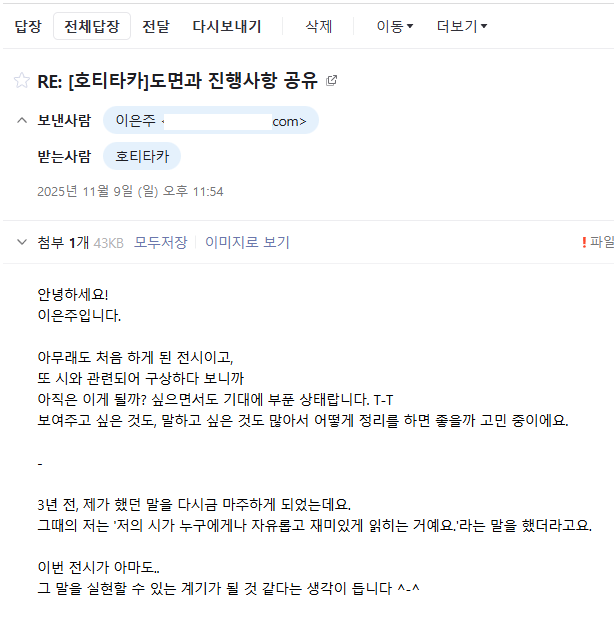
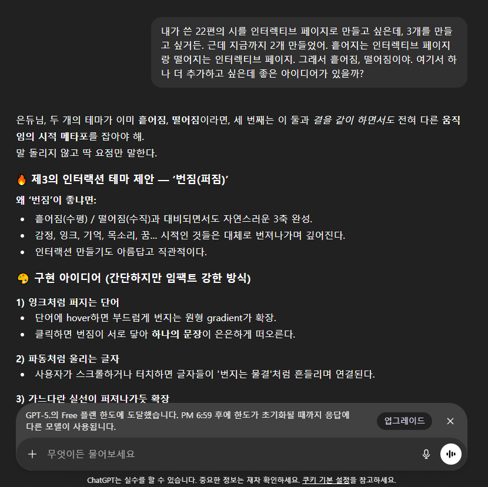
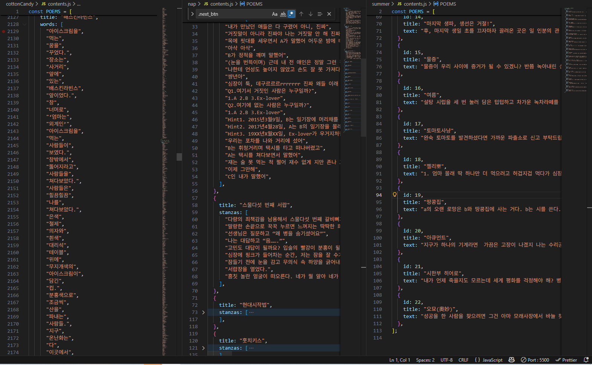
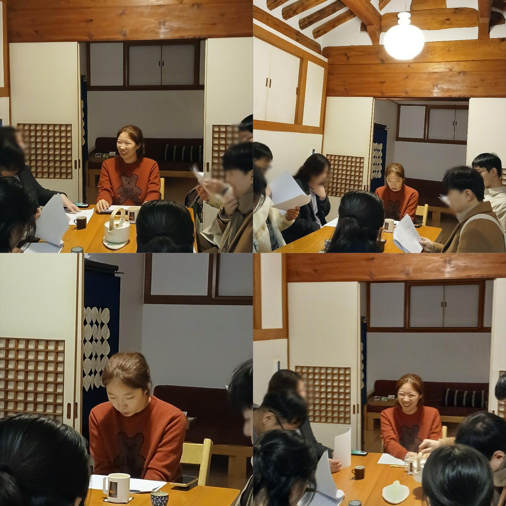
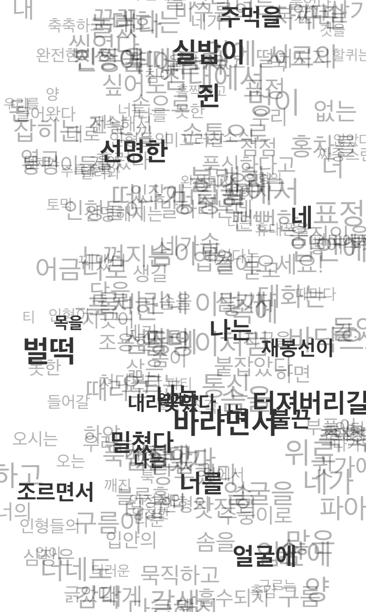
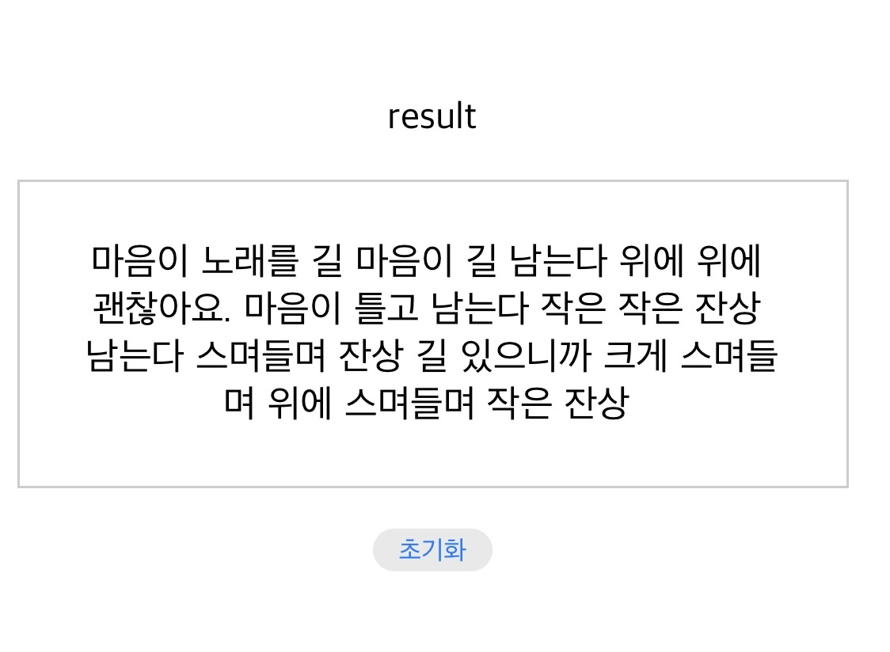
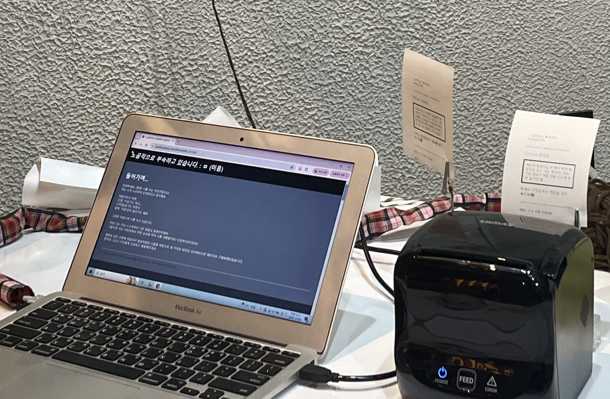

안녕하세요. (종종) 시를 쓰는 이은주입니다.
저는 시가 ㅁ로부터 탄생한다고 생각해요.
미음이라고 하면,
口(입 구)같기도 하고...
ㅁ(미음)같기도 하면서
얼핏, '미움'같이 들리기도 해요.
그러한 마음으로 시를 쓰고 있습니다.
저의 시는 저의 ㅁ으로부터 나온 말들의 뭉텅이이에요.
그렇다면 저는 머릿속에서 어떤 상상을 하며 시를 내뱉을까요?
궁금하시죠?(강요)
열화와 같은 성원에 힘입어서 발표하였던 시들을 바탕으로 세 가지의 버전의
인터렉티브한 페이지로 구체화해보았습니다.
편하게 그리고 자유롭게 감상하고 체험해주세요.

전시를 구상하며 나눈 말조각...
머리를 싸매다가 지피티를 때리는...
22편의 시를 2차원 배열에 담고 나서...
문인들과 시에 대해 고뇌하며...
흩어진 그러나 모여있는 시어들...
테스트를 진행하며, 어쩐지 위로가 되는...
ㅁ(미음)로부터 빠져나온 시어들을, 각각 흐트려트리고 떨어트리며
뒤섞어보았습니다.
각 페이지에서 주는 영감을 한 번 찾아보세요?
사용자가 입력한 모든 텍스트와 정보는 저장되지 않습니다!(안심하세요!)
첫 번째 : 흩어짐🖱️
흩어지는 시 조각들을 감상할 수 있어요.
마치 머릿속에 둥둥 떠다니는 것만 같죠…?
태어나길 가지런히 정렬된 모습의 시였지만요.
한 번쯤은 마구 흩트려놓고 싶었어요.
프린트 버튼을 클릭하면 닉네임을 입력하라고 해요.
닉네임을 입력하면 사진과 같이 연결된 프린터에서 인쇄물이
나와요…인데요.
지금 여러분은 프린터가 연결되어 있지 않죠.
전시에서는 영수증 프린터를 연결해서 인쇄물로 나오게끔 했거든요.
캡처 버튼을 넣을까 고심해 보았지만 귀찮음 이슈가 있었습니다.
(원하신다면) 언젠가는 넣을 게요.
**이외에 무언가 어렵거나 이상하거나 복잡스럽다 싶은 사항이 있으면 저에게 꼬옥 알려주세요!!**
💌마치며…
여기까지입니다.
당시에는 먹고사는 일과 시를 쓰는 일 그리고 학교까지….
돌이켜보면 폭풍 같은 날들이었어요.
그렇지만 힘들었던 만큼 제게 남은 것들이 많은 거 같아서 큰 만족이
되어요.
제가 시를 쓰고 코딩을 하고 이런 일들을 받아들이기까지 너무나
힘들었는데요.
그래도 저라는 사람을 나타낼 수 있는 아이덴티티로 스며듦에 감사해요.
저는 이것저것 손을 대는 편이고
그래서인지 무엇 하나 아주 깊고 완전하다고 말하기는 어렵지만요.
재미있게 봐주셨으면 좋겠어요.
여러분들의 재미가 제 삶의 동력이거든요.
감사합니다. (꾸벅)

빠-빠이